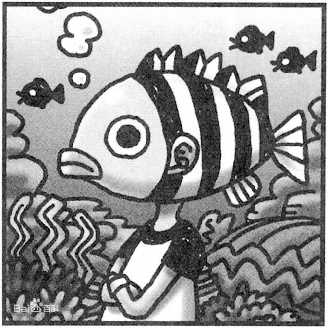

漫画家

- 姓名：尾田荣一郎（おだ えいいちろう）
- 代表作：《海贼王》
- 出生地：日本熊本县
- 出生日期：
创作生涯
- ，就读东海大学付属第二高等学校期间，以“月火水木金土”（つきひみずきこんどう）的名义，在漫画杂志《周刊少年 JUMP》投稿作品《WANTED!》
- ，创作了短篇海贼漫画《ROMANCE DAWN》。同年在漫画杂志《周刊少年 Jump》第 34 号开始连载漫画《海贼王》。
- ，创作了画集《ONE PIECE COLOR WALK 1》。
- ，与鸟山明一同创作了短篇漫画《Cross Epoch 鸟山明×尾田荣一郎》。
同行评价
-
宫崎骏： 评价尾田荣一郎和鸟山明的话，其实我是很不想卷入民众对他俩的论战啦，不过不得不说的是，我看待尾田时的心情就类似于手冢了。人们常说这个时代是《ONE PIECE》的漫画时代啊，说得非常正确。
-
鸟山明： 我的孩子也是《ONE PIECE》的忠实粉丝，后来我自己也看，我终于明白为什么每个人都为《ONE PIECE》而疯狂！
获奖记录
- 手冢赏（第 44 届）
- 第 41 回日本漫画家协会赏·大赏
- 熊本县荣誉县民